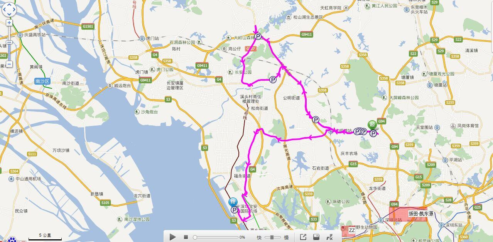

<!DOCTYPE html>
<html lang="en">
<head>
	<meta charset="UTF-8">
	<title>第三方物流-深圳市凯东源现代物流股份有限公司</title>
	<meta name="keywords"  content="仓库租赁、仓库出租、商超配送、超市配送、门店配送、便利店配送、城市配送、快消品城配、仓配一体化、供应链优化、流通服务商" />

	<meta name="description" content="凯东源城配可以为企业级客户提供仓库租赁、仓库托管、同城物流配送、商超配送、连锁便利店配送，涵盖仓到仓、仓到店等多种配送形式，能为客户提供分拣、分装、贴标、一件代发等增值服务。另有“流通服务商”模式专为品牌商提供快消品供应链优化服务。" />
	<link rel="stylesheet" href="css/reset.css">
	<link rel="stylesheet" type="text/css" href="css/services.css">
	<link rel="stylesheet" href="iconfont/iconfont.css">
	<link rel="icon" href="images/LOGO.png">
	<script src='js/jquery-1.12.3.min.js'></script>
</head>
<body>
	<!-- 头部开始 -->
	<header>
		
	</header>
	<!-- 加载头部内容 -->
	<script src="head.js"></script>
	<!-- 头部结束 -->

	<!-- 主体内容开始 -->
	<div class="container">
	</div>
	<!-- 主体内容结束 -->

	<!-- 尾部开始 -->
	<footer>
<div id="NetworkSupervision">
				<script id="ebsgovicon" src="http://szcert.ebs.org.cn/govicon.js?id=a3f48d97-dcb7-48b3-92ed-755f3d9fbc58&width=75&height=105&type=1" type="text/javascript" charset="utf-8"></script>
			</div>
	</footer>
	<!-- 尾部结束 -->

	<!-- 加载头部和尾部内容 -->
	<script src="load_common.js"></script>
	<script>
		addHtml("images/services/cangchu1.jpg","Product","Services","产品服务",'<li class="WarehouseIntegration"><a href="./WarehouseIntegration.html">仓配一体</a></li><li class="TPL"><a href="TPL.html">第三方物流</a></li><li class="WarehousingService"><a href="WarehousingService.html">仓储服务</a></li><li class="Value-added_logistics_service"><a href="Value-added_logistics_service.html">增值服务</a></li>',"第三方物流","THIRD PARTY LOGISTICS",'<p>第三方物流（Third-Party Logistics），简称3PL，是相对“第一方”发货人和“第二方”收货人而言的。是由第三方专业企业来承担企业物流活动的一种物流形态。3PL既不属于第一方，也不属于第二方，而是通过与第一方或第二方的合作来提供其专业化的物流服务，它不拥有商品，不参与商品的买卖，而是为客户提供以合同为约束、以结盟为基础的系列化、个性化、信息化的物流代理服务。</p><p>凯东源物流可以提供专业的物流设计方案、物流操作流程，有完善的物流工具、物流设施，以及标准化的物流管理体系，结合功能强大的K56供应链管理平台、配货易司机APP、互联云数据系统软件、客户管理系统等软、硬件系统设备，为客户打造科技化、平台化、标准化的3PL服务：</p><p>1、标准的合同化合作模式：凯东源物流会根据双方共同拟定的合同，提供多功能直至全方位一体化物流服务，并以契约形式来管理所有提供的物流服务活动及其过程。</p><p>2、提供个性化的服务：不同的物流消费者存在不同的物流服务要求，凯东源物流会根据不同物流消费者在企业形象、业务流程、产品特征、顾客需求特征、竞争需要等方面的不同要求提供针对性强的个性化物流服务和增值服务。</p><p>3、提供专业化的设备、设施：凯东源物流有强大的运作网络及高效的物流基地，结合功能完善的信息化管理系统，为客户打造信息化、专业化的服务体系。</p><p>4、信息网络化：信息技术是第三方物流发展的基础。凯东源物流有完善的网络信息管理系统，在物流服务过程中，做到了信息实时共享，促进了物流管理的科学化、极大地提高了物流效率和物流效益。</p><h4 class="center">“省时、省事、省钱、省心”</h4><div class="Tab"><div class="tabHead"><div class="tabFirst"><div></div><span>强大的运力资源</span></div><div><div></div><span>实时的定位系统</span></div></div><div class="tabContent"><div class="tab_content_first"><h4 class="special center">自有车辆300余台，外协车辆2000余台</h4></div><div><h4 class="special center">全程透明化，实时了解货物运输和存储情况</h4></div></div></div>');

		$(".Tab>.tabHead>div").click(function(){
			$(this).attr('class','tabFirst').siblings().removeClass('tabFirst');
			$('.tabContent>div').eq($(this).index()).fadeIn(100).siblings().fadeOut(20);
		})

	</script>
	<script>
		var  _hmt  =  _hmt  ||  [];
		(function()  {
		    var  hm  =  document.createElement("script");
		    hm.src  =  "https://hm.baidu.com/hm.js?300f74f8e279b0f9f25bb5d51c900a3f";
		    var  s  =  document.getElementsByTagName("script")[0];  
		    s.parentNode.insertBefore(hm,  s);
		})();
	</script>
	
</body>
</html>